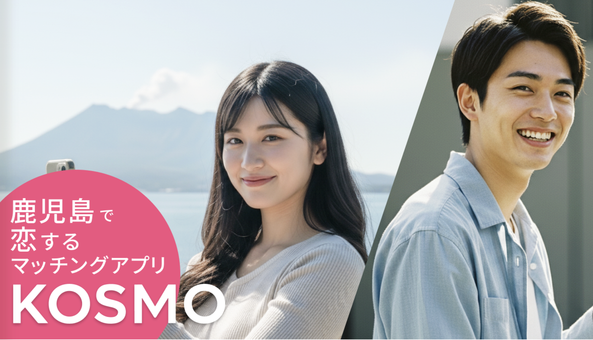

鹿児島で恋人ができないのは普通？まずは現実を整理
鹿児島で「いい感じの出会いがない…」と感じる人は少なくありません。これは個人の努力不足というより、人口密度・生活圏の広がり・コミュニティの固定化など、地域構造の影響が大きいからです。
ただし、やり方を変えれば打開できます。
- 出会いの母数を増やす（マッチングアプリ）
- 公的支援のイベント/相談/マッチングを活用する
- デートの成功確率を上げる（場所選び）
この記事はこの3点を「すぐ使える形」に落とし込みます。
鹿児島の恋愛が難しく感じる3つの理由
1. 人口密度と生活圏の広さ
鹿児島は車移動が基本で、生活圏が広がりやすい一方、“偶然の出会い”が起きにくい傾向があります。
2. コミュニティが固定化しやすい
地元のつながりが強いのは良さでもありますが、恋愛となると「知り合いの知り合い」になりやすく、気軽に動きづらいことも。
3. 出会いの導線が“店・職場・友人経由”に偏りがち
同じ導線に偏るほど、候補が枯れやすくなります。ここをアプリ＋公的支援で拡張するのが最短ルートです。
鹿児島でおすすめのマッチングアプリ
ここでは「使うべき理由が明確」なものを厳選します。
期待の新アプリ
【期待の新アプリ】鹿児島限定『KOSMO（コスモ）』
鹿児島県限定・話が早い

特徴：鹿児島県限定、在住確認、プライバシー機能、イベント、MYエッセンス
KOSMOは鹿児島県内在住者専用として設計された地域特化型のマッチングアプリです。県外からのプロフィール閲覧を防ぐ仕組みや、プライバシーを守る機能、地域密着イベントなど「鹿児島で会える導線」を重視しています。
- 鹿児島県民率が100%：利用者はすべて鹿児島県内在住者
- 鹿児島在住確認で、県外/国外からの望まない閲覧を防ぎやすい
- 女性は基本無料、男性は登録・マッチングまで無料（料金設計が軽い）
- ブロック、スクショ防止、写真のプライバシー設定などプライバシー機能
- 提携店で地域密着イベント（合コン/婚活パーティー等）も展開
- MYエッセンス & WISHエッセンスで相性検索を強化
※18歳以下の方は利用不可
アプリ公式：KOSMO（コスモ）
Pairs（ペアーズ）
Omiai（オミアイ）
恋活〜婚活まで幅広い層におすすめ。真面目寄りの温度感で、目的が合う相手を探しやすいです。
Omiai
公式サイト
※どれか1つに絞るなら、
- 地元に寄せたい：KOSMO
- 母数重視：Pairs
- 真面目寄り：Omiai
が基本の考え方です。
鹿児島県の公的支援で出会いを増やす
アプリと公的支援は競合ではなく、併用が最強です。
初デート向きカフェ（鹿児島市・霧島市）
初デートは「静かすぎず、うるさすぎず、会話が途切れても救われる」場所が強いです。
鹿児島市
GOOD NEIGHBORs（グッドネイバーズ）
住吉町。雑貨とカフェ。落ち着いた雰囲気で会話向き。
公式サイト
SANDECO COFFEE（サンデココーヒー）
名山町エリア。話題性があり、会話のきっかけが作りやすい。
食べログ
霧島市
VOILA COFFEE（ヴォアラ珈琲）
霧島国分本店のスペシャルティコーヒー。休日デート導線に組み込みやすい。
公式サイト
tombo coffee（トンボコーヒー）
霧島市隼人町の自家焙煎スペシャルティコーヒー豆専門店。落ち着いた時間に向く。
公式サイト
2軒目に使いやすいバー（鹿児島市中心）
「もう少し話したい」を叶える2軒目は、賑やかすぎない“会話が勝てる店”が正解。
バー スティンガー（BAR STINGER）
天文館エリアのオーセンティックバー。大人っぽく寄せたい時に強い。
食べログ
ラプティットセリーヌ（La Petite Cerine）
天文館エリアのワインバー。静かな雰囲気で2軒目に使いやすい。
食べログ
休日デートにおすすめのスポット
仙巌園（せんがんえん）
景色×散歩で会話が自然に続く。デート文脈が作りやすい定番。
公式サイト
桜島フェリー
“ちょっとした旅感”が出せる。短い時間でも非日常を作りやすい。
公式サイト
霧島神宮
空気が変わる系の王道スポット。散歩デートと相性が良い。
公式サイト
砂むし会館 砂楽（指宿）
観光デートの鉄板。日帰りでも満足度が高い。
公式サイト
安心して出会うための注意点
鹿児島に限りませんが、アプリの出会いでは以下は徹底。
- 最初は昼〜夕方、公共性の高い場所（カフェ/商業施設）
- いきなり遠方ドライブや個室は避ける
- 金銭/投資/副業の話が早い相手は警戒
- 店指定が強い、やたら外へ連れ出す動きは慎重に
安全にやれば、アプリは強力な出会いのインフラになります。
まとめ
鹿児島の恋愛が難しく感じるのは“構造”の影響が大きい。だからこそ、構造に対抗する方法（母数・公的支援・場所）を揃えるのが近道です。
- 地元に寄せる：KOSMO（鹿児島在住者専用の導線）
- 母数と目的で補強：Pairs / Omiai
- 真剣度の高い導線を追加：かごしま出会いサポートセンター＋鹿児島市の結婚支援
- デート場所は“勝ちやすい店・スポット”に寄せる
※本記事は公開情報をもとに作成しています。営業時間や定休日は変更される場合があるため、来店前に公式情報をご確認ください。